Business and professional websites
Present your services, information, location and contact details on your own website.
For example A website for a consultancy, an academy or a local business.
InquireNUDRAK / WEB DEVELOPMENT
Donovan Agustín Alvarez
I build websites and web applications to present services, manage information and carry out tasks online.
Discover moreMy work can cover a complete project, from its initial planning to launch, or focus on a specific part of development.
I help independent professionals, businesses and companies launch their web projects. I work with agencies and studios as an external developer and collaborate with other professionals on joint projects. I'm also open to opportunities within a development team.
If you're looking for a developer for your project or team, let's talk. We can review what you need, answer the first questions and consider how I can contribute. Contact me to explore a project, a collaboration or a job opportunity.
02 / WEB DEVELOPMENT
Websites, applications and integrations to fit what you need.
From presenting your work to managing your business: these are the websites and applications you can hire me to build.
Present your services, information, location and contact details on your own website.
For example A website for a consultancy, an academy or a local business.
InquirePresent your work, projects, background and areas of expertise in an organised way.
For example A photography portfolio or a design studio’s body of work.
InquireBring an offer’s information together and make it easy to send inquiries, register or apply.
For example A page introducing a service and collecting requests for information.
InquireOrganise products, dishes or services with images, descriptions, categories and filters.
For example A restaurant menu or a product catalogue.
InquireManage posts, news, articles or information about your business.
For example A website for publishing articles or updating business news.
InquireSell products with a catalogue, cart, orders, payments and inventory management.
For example A store with product management and order tracking.
InquireLet visitors check availability and book, with tools to manage their requests.
For example An appointment system for a professional or bookings for a business.
InquireOrganise customers, tasks, orders, inventory or other business processes.
For example A dashboard for managing orders or coordinating a team’s tasks.
InquireConnect your tools and automate actions between them.
For example Send confirmations, generate documents or update records.
InquireFix errors, refresh interfaces and add the features your project needs.
For example Add a feature to an existing website or update its screens.
InquireI work as an external developer on your agency’s projects. You can delegate the complete build or a specific part, coordinating delivery with your team.
I turn your team’s designs into working pages and interfaces for mobile and desktop.
For example: A client’s website built from your studio’s design.
I build components, screens, navigation, animations and API connections.
For example: An interface connected to the project’s existing backend.
I implement APIs, databases, authentication, permissions and business logic.
For example: An API with users and permissions for an application.
I take on development of a project for one of the agency’s clients.
For example: A website or application with an integrated frontend and backend.
I implement specific modules within a larger project.
For example: Bookings, payments, forms or an admin dashboard.
I connect the project to payments, email, storage, AI services or other tools.
For example: Integrate a payment provider or email delivery.
I fix issues, extend features and improve performance, accessibility or device support.
For example: Adapt an interface for mobile or extend an application’s features.
We combine our expertise to work on a project. We agree on responsibilities, coordination and payment through subcontracting, separate quotes or a joint proposal.
Discuss a collaborationI develop your pages and applications, including their interactions and features.
I take on the frontend, backend, an integration or a specific module.
I build campaign pages, forms and registration or lead capture features.
I develop portfolios, publications or catalogues incorporating your text and audiovisual materials.
I handle web development on projects that bring together several areas of expertise.
I analyse implementation issues and propose or implement solutions within the shared project.
The arrangement depends on what you need and how I take part in the project. Scope, deliverables and terms are agreed before work begins.
I build the website, application or feature with an agreed scope, deliverables, timeline and quote.
You receive the code, documentation and instructions. You or your team publish and operate the project.
I build the project and get it running. We agree on the domain, hosting, external services and publishing.
Accounts are in your name and you cover their costs. I hand over the working project, access details and management instructions.
I build and publish the project, then continue addressing agreed technical needs. This arrangement is also available for existing projects.
We define tasks, availability, duration and payment. It may include maintenance, updates, changes and hosting administration.
A specific piece of work: implementing a design, building a website or API, or adding a feature.
We agree on scope, deliverables, timeline and quote. Delivery is completed in full or in stages.
I work on the tasks the agency needs, according to its priorities.
We agree on a rate, time tracking and a limit on time or budget. I deliver progress and changes as tasks are completed.
I work on an ongoing basis across one or more agency projects.
We define time commitment, availability, responsibilities, follow-up and payment. Deliveries follow each period’s priorities.
I take on a specific part of the project with an agreed scope, deliverables, timeline and quote.
We can also submit a joint proposal, defining each professional’s work and payment.
I carry out development tasks according to the shared project’s needs.
We agree on a rate, time tracking and a limit on time or budget. I deliver progress and changes as tasks are completed.
We combine our expertise on an ongoing basis across one or more projects.
We define responsibilities, time commitment, availability, coordination and payment. Deliveries follow each period’s priorities.
Frequently asked questions
Answers to common questions about a commission. Details are agreed for each project.
Tell me what you want to achieve, what you need built and what information or materials you have. If the project already exists, share its link and the available context. In our initial conversation we clarify questions and what is missing to define the work.
The quote depends on the scope: what will be built, the deliverables and the working arrangement. We agree on it before starting, together with payment terms.
We define the timeline when agreeing on the scope, required materials and each party’s responsibilities. If work is organised in stages, we also agree on their deliverables.
Before starting, we agree on reviews and how to share progress and feedback. If new needs arise, we review their scope and agree on the relevant adjustments.
Handover includes the code, documentation, access details and instructions relevant to the commission. Publishing and ongoing support depend on the agreed arrangement. When I handle the launch, domain, hosting and external service accounts are in your name and you cover their costs.
LET’S TALK ABOUT YOUR PROJECT
Tell me what you need and share the context you have. It can be a new project, an improvement or a collaboration. I’ll reply to the email you provide.
donovannud@gmail.com03 / SELECTED WORK
Websites, applications and systems I have developed. Explore what they do and how they are built.
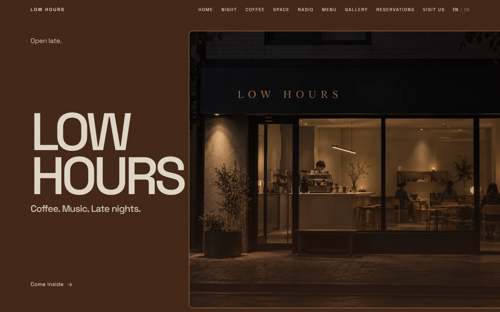
A website for a late-night café: menu, gallery and music in an editorial experience.
React · TypeScript · GSAP
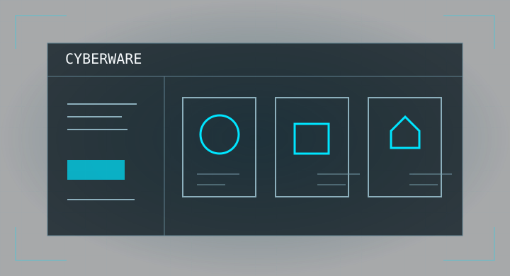
An online store with a catalogue, cart, orders, inventory and an administration console.
React · FastAPI · PostgreSQL
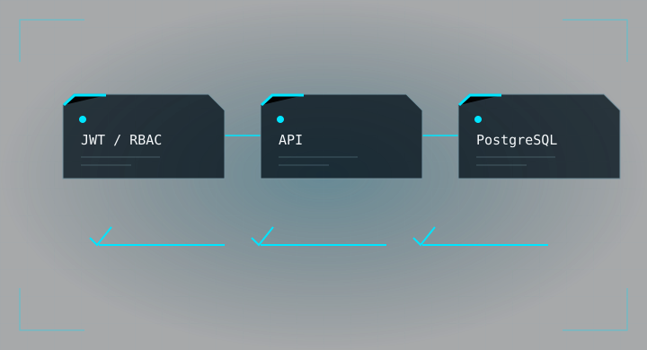
A system for organising tasks across teams and controlling who can view or change them.
FastAPI · PostgreSQL · Docker
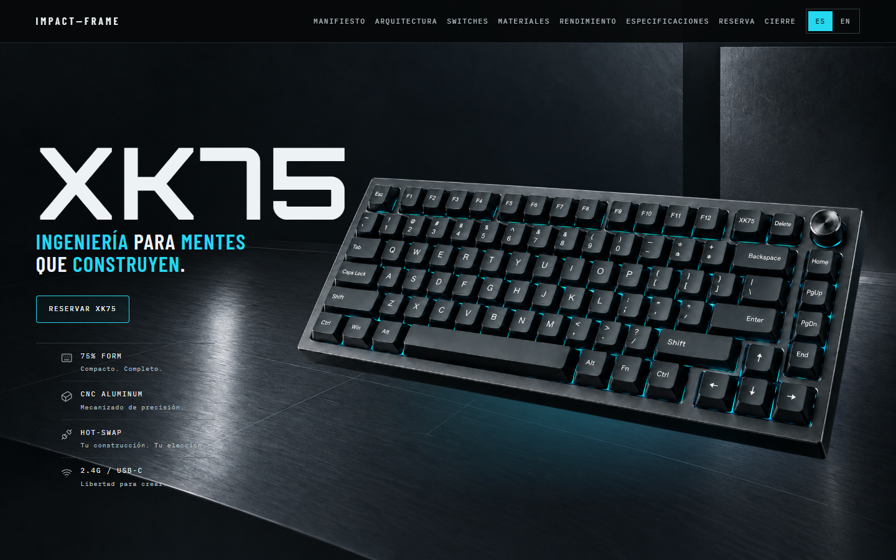
An interactive page explaining a keyboard’s architecture, materials and operation.
React · TypeScript · GSAP
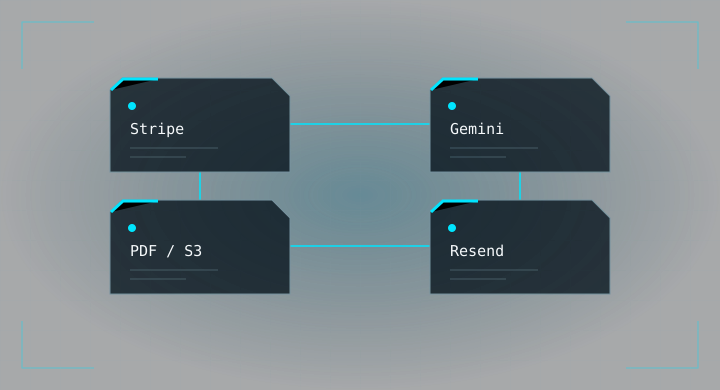
A backend that receives payment events and automates documents, files and emails.
FastAPI · Celery · Gemini
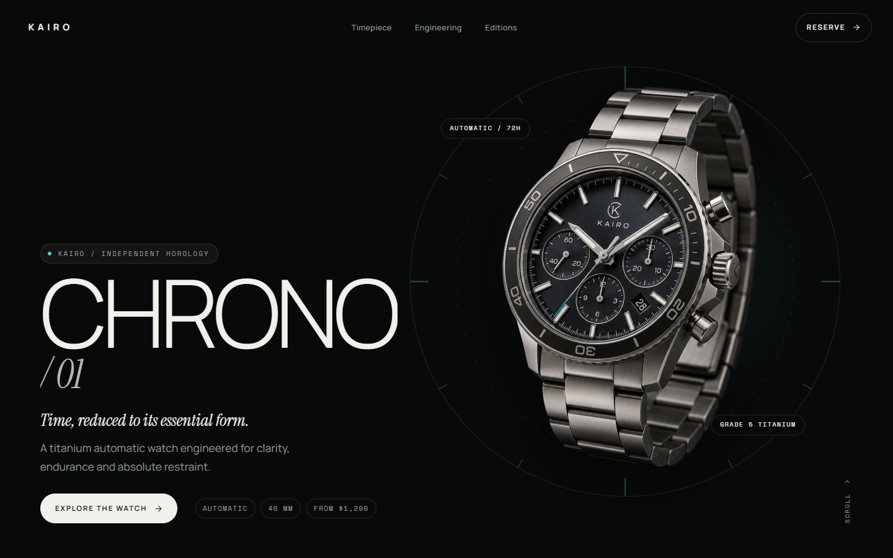
A watch presentation with an editorial style, finish selector and accessible interactions.
React · TypeScript · Framer Motion
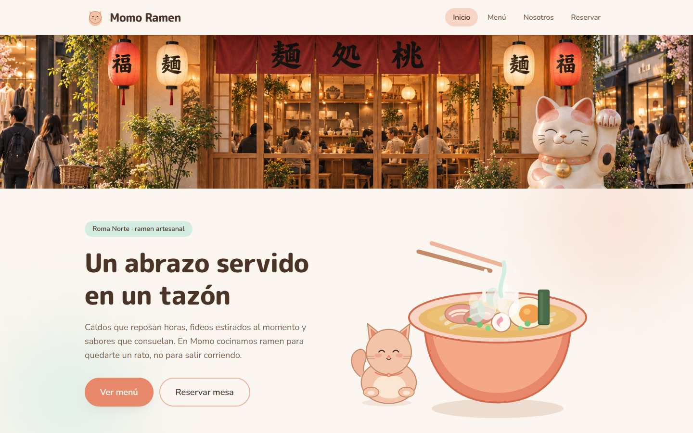
A restaurant website with a menu, its story and a demonstration booking journey.
React · Tailwind CSS · React Router
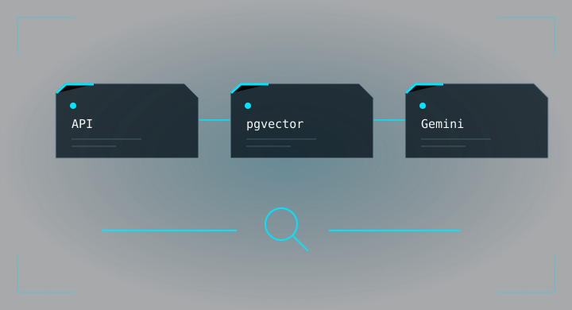
A store backend that lets users find products by meaning through semantic search.
FastAPI · pgvector · Gemini
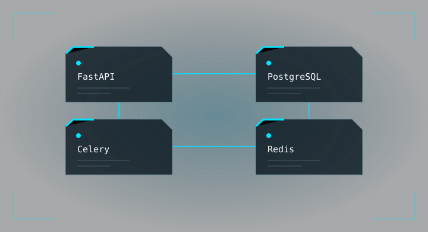
A backend for organising portfolios, tracking trades and processing market data.
FastAPI · PostgreSQL · Celery
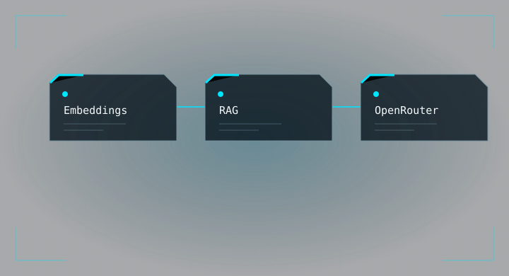
A service that retrieves relevant information to provide context to a language model.
FastAPI · OpenRouter · SQLite
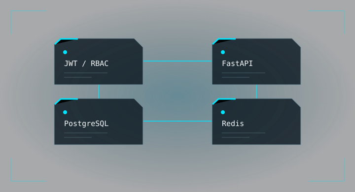
The foundation of an online store: products, users, cart, orders and stock management.
FastAPI · PostgreSQL · Redis
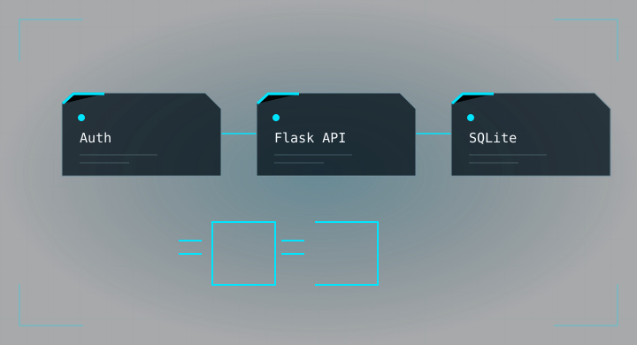
An API for saving personal notes and sharing them with other people through permissions.
Flask · SQLite · SQLAlchemy
04 / Working together
A clear path from the first conversation to the final handover. Select a stage to see what each of us contributes.
I review what you want to build, ask questions and identify the information needed to define the work.
You explain your goals and share the information, materials or existing project available to you.
A shared understanding of the need and the questions we must resolve before setting the scope.
I outline the development work, deliverables and engagement model, together with the budget, timeline and reviews.
You review the proposal, confirm priorities and agree on the materials and responsibilities needed to begin.
An agreed scope and clear responsibilities, deliverables and working terms for both sides.
I organise the implementation and share progress so that we can review the work against the agreed scope.
You review the work, share your feedback and help clarify any decisions that affect the project.
Reviewed progress and agreed adjustments. New needs are discussed before expanding the work.
I check the result and hand over the code, documentation, access and instructions included in the agreement.
You review the deliverables and confirm that you have the information and access needed to use or maintain the project.
The agreed technical handover, with deployment and subsequent support when included in the engagement.
05 / Technical profile
Full-stack web development with a strong backend foundation. I connect interfaces, APIs and data to build maintainable applications.
I work with modular architectures and a clear separation between transport, business logic and data access. I prioritise explicit validation, traceable operations and predictable behaviour when external services fail.
Responsive interfaces, reusable components and interactions connected to APIs. Navigation, application state and data fetching for complete user journeys.
REST APIs, relational data, authentication and role-based permissions. Payments, webhooks, automation and AI services, with validation and structured error handling.
Also: Pydantic, Alembic, SQLite, JWT, RBAC and integrations with Stripe, S3, Resend, Gemini and OpenRouter.
Reproducible environments, version control and automated checks. Layered architectures, database migrations and continuous integration to maintain and extend projects.
Backend development with Python
Structured independent learning since November 2025: REST API design, SQLAlchemy, layered architecture and production tools. I analyse existing systems and validate their patterns and design decisions in my projects.
Professional profile, education and projects in PDF format. Available in Spanish and English.
PDF document06 / Contact
Have a web project in mind, need development support or want to discuss a professional opportunity?
Use the enquiry form to explain your project, or contact me through the channels below. I work with businesses, agencies, other professionals and development teams.
Go to the enquiry formRemote work · UTC−6
Spanish · Technical English